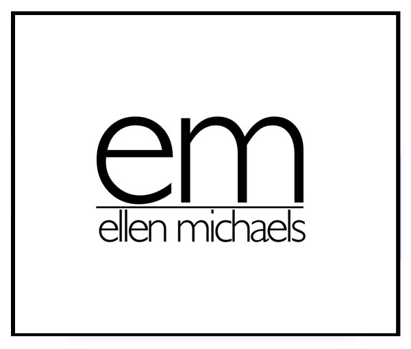
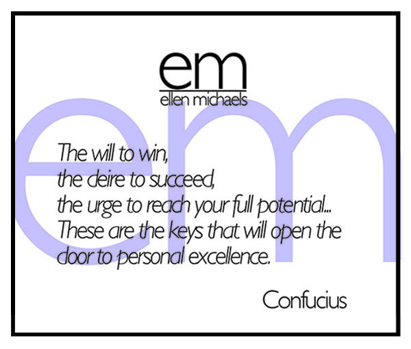
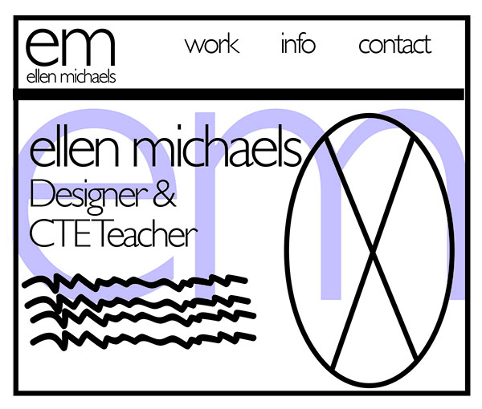
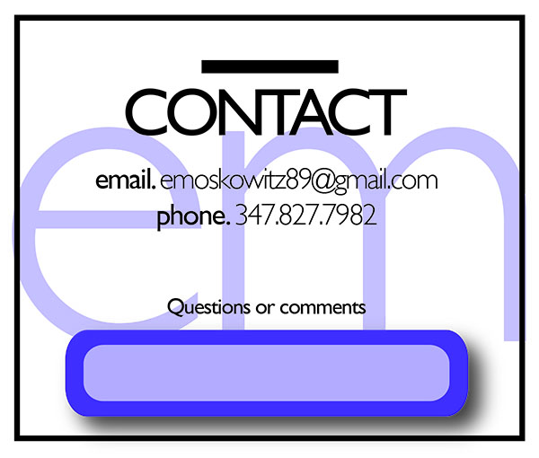

The two websites I was most inspired by are 24 Ways, an interactive blog, and Upstruct, a travel agency.
The 24 Ways website is an interactive blog, consisting of unusual navigation and an informally balanced layout, which caught my eye. The layout consists of a calendar background as its negative space, and includes only 4 colors (black, white, grey, and a translucent red, which is seen throughout).The headline, 24 Ways, is larger then the rest of the type content, and of a bright translucent red that stands out, but it is the only element emphasized on the page. The space is utilized nicely, having a grey background with a small area on the right/center, to view the blog content. The right sidebar is free of positive space, except for the "about content".
The entire webpage is consistent throughout in color and size, and is simple to navigate. After brainstorming the reorganization of space, size and balance, I fell that the entire layout should be changed, because I don't feel that the website demonstrates its purpose. Firstly, the top bar with the navigating buttons should be straight across, without the text askew. Next, the background image can be smaller, and of different content showing what the client can expect after using that agency (a happy couple traveling with suitcases, people on a plane, etc.). Since the background image will be smaller, and placed to the left, there will be empty space on the right, which can include 4 images of the different ways of "taking a ride". The images can be a train, a plane, a rented car, or bus. The quote can be moved down, under the image of the couple mentioned earlier to create a better reorganization of the site.
Upstuct is the second website I found to be visually pleasing, also because of its informal layout. This website is for an airfare agency. The colors are very simple, using only orange, white and black, with a large, cut off image as its background. The top bar and the text inside are off kilter, helping the eye move throughout the page. A quote is on the left side, while there is negative space on the right with the image in its background.
After brainstorming the reorganization of space, size and balance, I fell that the entire headline should remain; yet the blog portion should be larger to fill in the grey empty space on the right, so that it would be more balanced, and less scrolling would be involved.
After viewing both websites, what makes them different is their overall content and purpose. 24 Ways is a blog, while Upstruct is a website to obtain tickets for travel. They also use different color schemes and 24 Ways uses translucent colors, while Upstruct uses bright bold lettering and a lot of empty space. The background image on Upstruct is emphasized, while 24 Ways emphasizes its title. The navigation bar is also in a different area of the page. 24 Ways has a navigational bar, which is lower on the page then Upstruct, which is on the very top. Both sites have informal balance, which I find appealing.
My site will open with my logo in the center of the page, and then when the mouse hovers over the logo, the page will turn to the next page, which includes my logo, then my favorite quote. The logo text in the background of transparent color will slide from both of the sides of the page when the mouse hovers, to create a large logo "em" in the back.
 This page includes my logo on top with a 3-tab menu bar including work, contact and info. The logo text in the background of transparent color, will slide from both of the sides of the page when the mouse hovers, to create a large logo "em" in the back. My basic information and title will show on this page with a sketch of me on the right side.
This page will have a double slideshow of images of work I have created, as well as my students from my various lessons I've taught. The "em" will also slide in on the background.
The contact page includes my email, phone number, and a comment box for users to ask questions or leave comments.
This page will include prices charged for each service such as business cards, flyers, cards, calendars, books, magazines, albums, logo designs, screen printing, etc.